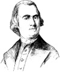

1743 yılında 21 yaşındaki bir öğrenci, Harvard Üniversitesi’nin mezuniyet töreninde konuşma yapmak için kürsüye çıktı. Massachusetts kolonisini yöneten İngiltere valisinin de aralarında bulunduğu kalabalığa konuşan genç, tamamı Latince olan ileri görüşlü bir konuşma yaptı: Vatandaşların kendi refahlarını gözetmeyen bir devlete karşı direnme haklarının bulunduğunu ilan ediyordu.

Bu genç, Bostonlu bir bira imalatçısının oğlu Samuel Adams’tı (1722-1803). Adams, iş hayatında başarısızlıklar, özel hayatında da trajedilerle dolu geçen yirmi yılın ardından İngiltere yönetimine karşı ateşli bir muhalif olarak ortaya çıkmıştı. Zaten son derece yaygın olan Boston’daki İngiltere aleyhtarı hoşnutsuzluğu örgütleyerek, Amerikan Devrimi’ne doğru evrilecek olan direniş sürecini başlattı.
Adams, sorun çıkaran bir muhalif olarak görülmeye başlamasından hemen önce pek çok insan için sadece başarısız bir adamdı. Elindeki parayı idare etmeyi bilmiyordu. Babasının bira imalathanesi ona miras kalmış, ama kısa zamanda bu işi eline yüzüne bulaştırmıştı. Bir gazete çıkarmayı denediyse de finansal açıdan başarısız oldu (ancak bu deneyim onun siyasete olan ilgisini arttırdı). Bir dönem Boston’da vergi tahsildarlığı yaptı. Ne var ki bir vergi tahsildarı için fazla yufka yürekliydi. Altı çocuğundan sadece ikisi hayatta kalabildi. Karısı Elizabeth 1757 yılında ölü bir çocuk doğurduktan sonra öldü (Adams daha sonra yeniden evlendi).
1765 yılında kağıt gibi çeşitli ürünlere konan bir vergi olan Damga Kanunu’nun yürürlüğe girmesi, Boston’da genel bir hoşnutsuzluk yarattı. Bu ortam Adams’ın mezuniyet konuşması sırasında ortaya çıkan asi ruhunun yeniden canlanmasına neden oldu. Gazetelerdeki yazılarında ve mitinglerde İngiliz vergilerine karşı çıktı ve halkı boykota davet etti. Daha sonra Özgürlük Çocukları adında bir yeraltı direniş örgütü organize edecekti. Bu grup 1773 yılında çaya konulan vergiyi protesto etmek için Boston Çay Partisi’ni düzenledi.
1775 yılında İngilizler Adams’ı ve dostu John Hancock’u (1737-1793) tutuklamaya teşebbüs edince gerilim isyana dönüştü. Ertesi yıl Hancock ve Adams Bağımsızlık Deklarasyonu’nu imzaladılar.
Adams, savaştan sonra siyasette daha pasif bir rol oynadı. Bir dönem Massachusetts valiliği yaptı. Küçük kuzeni John Adams’ın (1735-1826), Amerika Birleşik Devletleri’nin ikinci başkanı oluşunu görecek kadar yaşadı. Seksen bir yaşındayken Boston’da öldü.
Ek Bilgiler
1- Samuel Adams Bira Fabrikası, 1985 yılında kuruldu. Etiketin üzerinde Adams’ın resmi olmasına rağmen firmanın bu tarihi karakter ile hiçbir ilgisi yoktur.
2- Adams ve kuzeni, 1775 yılındaki Anayurt Kongresi’nde George Washington’un (1732-1799) Anayurt Ordusu’nun başına getirilmesini önerdiler. Bunu yaparken, askeri deneyimi olmamasına rağmen bu göreve talip olan Hancock’un arzusuna karşı gelmiş oluyorlardı.
3- Adams’ın oğlu Samuel Adams Jr (1751-1788), Washington’un ordusunda doktorluk yaptı. Savaş sırasında hastalandı. Bir daha asla mesleğine geri dönemedi. Otuz altı yaşında veremden öldü.